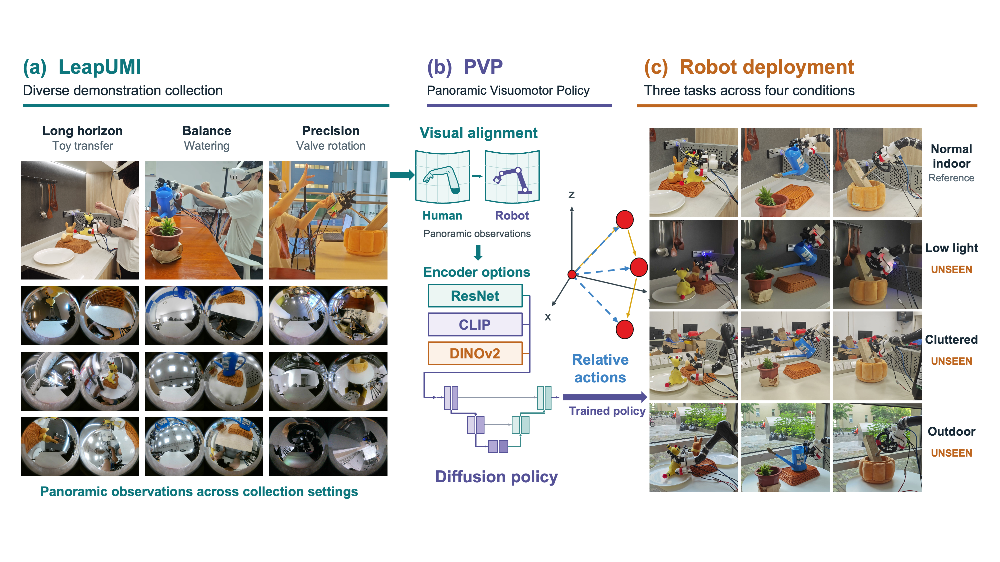
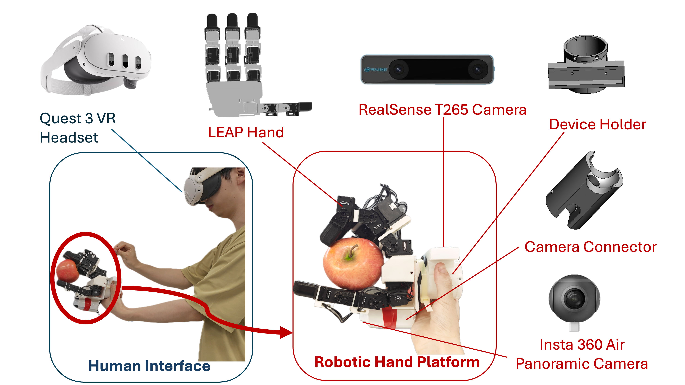

Watering
assets/videos/watering.mp4Watering
Learning Dexterous Robot Manipulation Policies
without a Robot Arm
Learning visuomotor policies for dexterous manipulation tasks requires large demonstration datasets, but existing collection interfaces trade off embodiment fidelity, hardware cost, and portability. In this paper, we propose LeapUMI, a low-cost robot-arm-free interface for in-the-wild collection of dexterous manipulation demonstrations. To transfer collected data to robot action, we introduce the Panoramic Visuomotor Policy (PVP) framework, which combines relative action representation, panoramic visual encoding, and image inpainting to bridge the visual gap for diffusion policy learning. We validate the combined LeapUMI–PVP pipeline through real-robot experiments on three dexterous manipulation tasks in diverse deployment conditions, comparisons with arm-based teleoperation, trajectory reconstruction analysis, and ablations of visual-processing choices. Using DINOv2 visual features, PVP achieves 84.4% average success rate across three tasks in the in-distribution setting and 68.9% average success rate across three unseen environments, including outdoor environments. This demonstrates generalization to visually diverse settings and supports in-the-wild LeapUMI data collection for policy deployment in different environments. LeapUMI provides 2.5 times the demonstration-collection throughput of arm-based teleoperation under the same time budget while maintaining competitive downstream policy performance. Overall, results establish LeapUMI as a low-cost yet efficient approach to robot-arm-free data collection for dexterous manipulation tasks, while PVP successfully bridges the coordinate-frame and visual gaps between handheld collection and robot deployment. Code and dataset will be publicly released upon acceptance.

assets/images/main.pngOverview of the LeapUMI–PVP pipeline. (a) LeapUMI enables robot-arm-free demonstration collection for long-horizon object manipulation, watering, and valve rotation, recording panoramic observations across diverse real-world settings. (b) PVP combines panoramic visual encoding, inpainting-based visual alignment, and relative end-effector action representations to train a diffusion policy. (c) The trained policies are deployed on a robot arm equipped with the Leap Hand. Columns show the three tasks in the same order as in (a); rows show normal indoor, low-light, cluttered, and outdoor conditions, from top to bottom. Low-light, cluttered, and outdoor evaluation scenes are excluded from training to assess zero-shot generalization.

assets/images/devices.pngDrag to rotate, scroll to zoom.
assets/videos/watering.mp4Watering
assets/videos/rotation.mp4Rotation
assets/videos/toy.mp4Toy
assets/videos/deploy_watering.mp4Watering
assets/videos/deploy_rotation.mp4Rotation
assets/videos/deploy_toy.mp4Toy